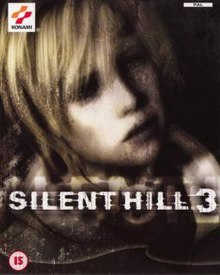
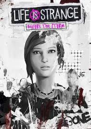
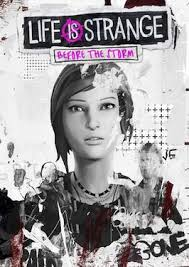
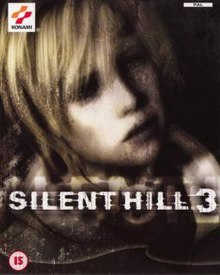
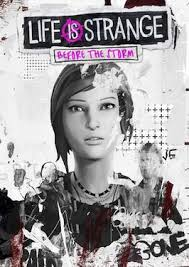
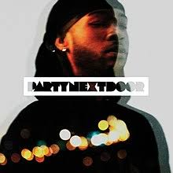
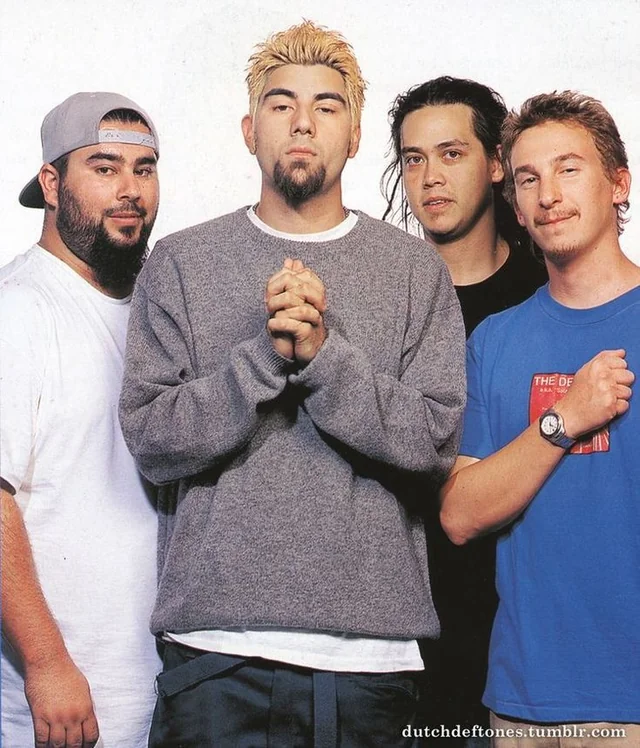
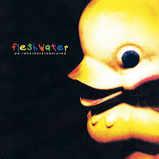

Interest
Playing video games mainly story games because they really capture my interest and keep me wondering about it for a while.
 

Music plays a big part in my life and no matter what I'm doing music is being played. My top genres are usually Rock, R&B and Rap but I listen to generally anything.





Tech is also a big deal when it comes to my interest I like the software part more than the hardware even though they meet togther in the end